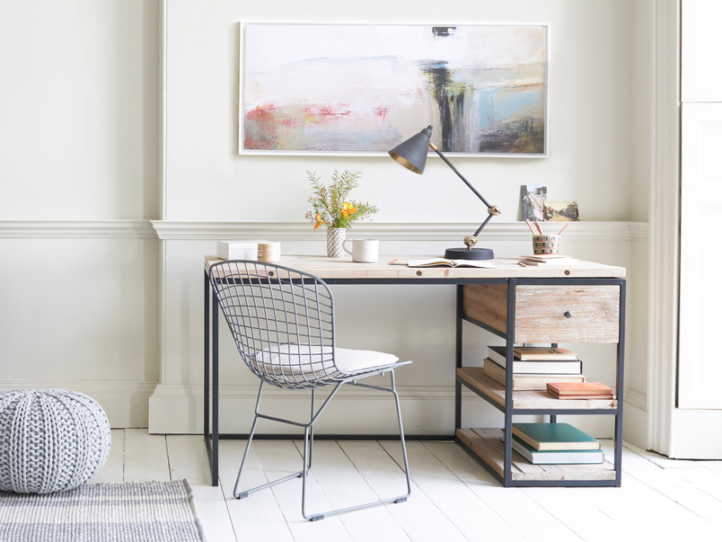

30 فروردین 1399
تاثیر نظم و سازمان دهی در موفقیت
قطعا شنیده اید که هرچه محیط کار یا اتاق فکر منظم تری داشته باشیم، میتوانیم تمرکز بالاتری داشته باشیم.
بیشتر
14 اسفند 1398
آیا خلاقیت تاثیری بر زندگی شاد دارد؟
بسیاری از روانشناسان ما را به اختصاص دادن زمان مشخصی برای کارهای خلاقانه تشویق میکنند اما چرا؟
بیشتر
28 بهمن 1398
برنامه ریزی و تست، آیا مهم است؟
بی شک تا به حال برنامه ای کنسل شده یا برایتان مشکلی پیش آمده و نتوانستید طبق برنامه پیش روید، آیا میشود همیشه برنامه خاصی را دنبال کرد؟
بیشتر